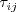
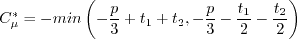

| (1) |
| (2) |
| (3) |
| (4) |
|  | (5) |
| (6) |
| (7) |
| (8) |
| (9) |
| (10) |
| (11) |
| (12) |
| (13) |
| (14) |
| (15) |
| (16) |
| (17) |
| (18) |
| (19) |
| (20) |
| (21) |
| (22) |
| (23) |
| (24) |
| (25) |
| (26) |
| (27) |
| (28) |
| (29) |
| (30) |
| (31) |
| (32) |
| (33) |
| (34) |
| (35) |
| (36) |
| (37) |
| (38) |
| (39) |
| (40) |
| (41) |
| (42) |
| (43) |
| (44) |
| (45) |
| (46) |
| (47) |
| (48) |
| (49) |
| (50) |
| (51) |
| (52) |
| (53) |
| (54) |
| (55) |
| (56) |
| (57) |
| (58) |
| (59) |
| (60) |
| (61) |
| (62) |
| (63) |
| (64) |
| (65) |
| (66) |
| (67) |
| (68) |
| (69) |
| (70) |
| (71) |
| (72) |
|  | (73) |
| (74) |
| (75) |
| (76) |
| (77) |
| (78) |
| (79) |